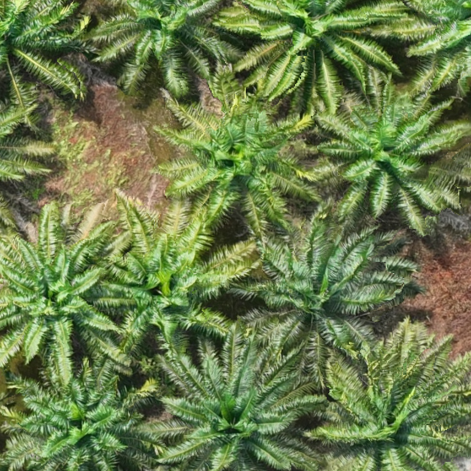
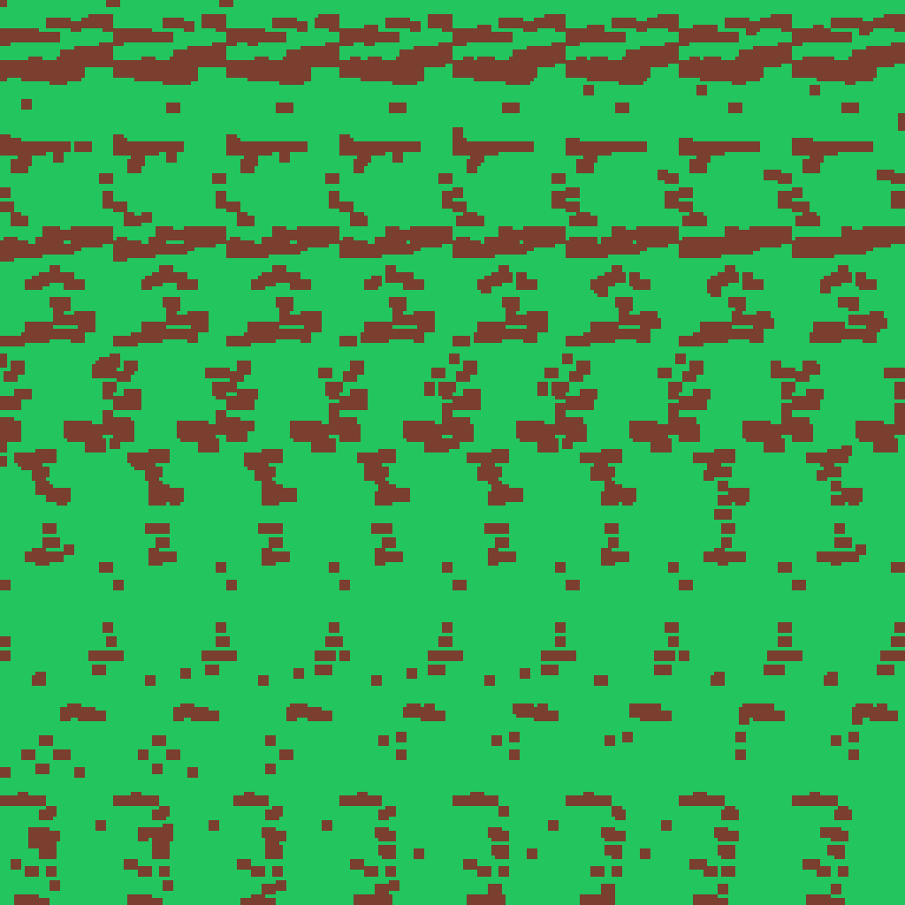

我没有靠猜——直接解析了你 D:\WGR\WGR17.tif 的文件头与地理标签，并实际解码了瓦片、导出了真实预览图。以下是实测结果。
先回答你问的两个问题：含不含地理坐标？含，而且是标准的。 RGB 还是多光谱？RGB。
文件内含完整的 GeoKeyDirectory（地理键目录）、ModelPixelScale（像素尺度）、ModelTiepoint（定位点）——地理坐标信息齐全，项目成立的前提满足。
地面分辨率 3.3 厘米/像素，属于无人机航拍里的高分辨率。单株油棕树冠在图上约占 240~300 像素，连羽叶都看得清——对检测非常有利。
坐标系是 EPSG:4326（经纬度），不是投影坐标。这意味着算面积前必须重投影，否则面积数字全是错的。详见第 4 节。
最重要的一条发现：你的影像是 EPSG:4326 地理坐标系，单位是"度"。
在"度"下面算面积是数学上错误的——因为 1 度经度在赤道约 111 公里、在两极是 0。所以系统必须先把影像重投影到 UTM 投影带（你的位置对应 EPSG:32649，单位是米），才能计算面积和距离。
好消息是：这条规则我们早在架构里就写死了（"面积一律在投影系下计算"）。现在它从"最佳实践"升级为 必须执行的关键步骤。你这份数据正好验证了它的必要性。
以下数值全部来自文件头解析与瓦片实际解码，非估算。
| 项目 | 实测值 | 说明 |
|---|---|---|
| 主文件 | WGR17.tif | 3,731,389,207 字节 = 3.48 GiB，与你说的"3GB 左右"吻合 |
| TIFF 类型 | BigTIFF（magic=43） | 大文件专用变体，普通 TIFF 工具可能读不了，GDAL 可以 |
| 压缩方式 | Deflate（zlib） | 无损压缩，压缩比约 2.4:1 |
| 存储结构 | 分块瓦片 256×256 | 共 32,375 块（185 列 × 175 行）。天然支持"只读需要的那一块" |
| 外部金字塔 | WGR17.tif.ovr = 1.05 GiB | 已有缩略图层已建好，重采样方式 NEAREST |
| 附属文件 | .prj / .tfw / .aux.xml | ArcGIS 风格的边车文件（坐标系 / 定位 / 元数据） |
| 项目 | 实测值 | 说明 |
|---|---|---|
| 图像尺寸 | 47,130 × 44,686 像素 | 合计 21.06 亿像素 |
| 波段数 | 4 个（各 8 位） | 色彩模式 = RGB |
| 第 4 通道 | 恒为 255（实测 768×768 区域全部 = 255） | 是 Alpha全不透明遮罩，可安全忽略 → 实际就是 RGB 三波段 |
| 是否多光谱 | 否 | 没有近红外 / 红边波段。只能靠形状 + 颜色认树 |
| NoData | 0 | 影像边缘或异常区可能是纯黑（0），预处理需处理 |
| 项目 | 实测值 | 说明 |
|---|---|---|
| 坐标系 | EPSG:4326（WGS 84 经纬度） | 单位是"度"，不能直接算面积 |
| 像素尺度 | 0.0000002965049° (X) 0.0000002984381° (Y) | 换算后 ≈ 3.30 cm × 3.30 cm |
| 左上角坐标 | 经度 111.19693°E 纬度 1.19044°N | 位于马来西亚砂拉越（婆罗洲），典型油棕种植区 |
| 覆盖范围 | 约 1,555 m × 1,475 m | ≈ 2.29 平方公里 ≈ 229 公顷 ≈ 3,440 亩 |
| 应使用的投影带 | UTM 49N → EPSG:32649 | 算面积 / 距离前需重投影到此坐标系 |
下面两张图是我直接从你的 tif 里解出来的（没有用 GDAL，纯 Python 解码 zlib 瓦片）。这证明数据可读、且内容正是油棕园。


顺手验证的三件事（都通过了）
实测结果对项目意味着什么。
影像含完整地理坐标，所以能算出空地的真实面积、能输出经纬度多边形、能挂到地块上。这是整个项目能做的根本前提，现在确认了。
坐标系是"度"不是"米"。系统必须先把影像重投影到 EPSG:32649 再算面积。这条要写进代码，不是可选项。
第 4 通道是 Alpha 不是近红外，所以不能用植被光谱指数辅助判断。好消息是 3.3 cm 的分辨率足够高，光靠形状和颜色就足以认出油棕。
同时意味着：开源项目 canopy-gap-detection（需要 RGBI + 高度数据）不能直接拿来用。
3.3 cm/px 意味着单株树冠约占 240~300 像素，连羽叶纹理都能看清。这对"识别单株缺株"这个最难的场景非常有利——比预想的条件好。
已经是256×256 分块存储，还自带金字塔。这意味着"只读需要的区域"和"快速预览"这两个需求，文件层面已经准备好了，不需要大改造。
我用最简单的植被指数阈值法试了一下（见第 3 节第二张图），结果是碎片化严重——羽叶太细，阈值切不出一整棵树。
这正好证明：必须用训练好的 AI 分割模型，经典图像处理搞不定。
你让我给个最佳值。这次有实测数据支撑，可以给出有依据的推荐，而不是拍脑袋。
推荐默认值：min_gap_area_sqm = 30
含义：小于 30 平方米的空地不报。这个值能稳定捕捉"单株缺株"（40~55 m²），同时把模型噪声全部滤掉。
阈值本质是业务决策，不是技术参数——取决于"多小的空缺值得派人去补种"：
| 业务意图 | 建议阈值 | 会检出的最小单位 |
|---|---|---|
| 连单株缺株都要补 | 25 ~ 35 m² | 1 棵树的位置 |
| 只补成排 / 成片缺株（≥2 株） | 60 ~ 80 m² | 2~3 棵树连成一片 |
| 只关注大片闲置地块 | 200 ~ 500 m² | 明显的一大块空地 |
系统会把阈值做成界面可调，你可以先用 30 m² 跑一遍看效果，觉得太碎就往上调。
你说"当前没有模型，可以去下载"。我已经查清并下载了符合你条件（离线可用、MIT/Apache 宽松许可、可商用）的模型。
| 模型 | 用途 | 体积 | 许可证 | 状态 |
|---|---|---|---|---|
| DeepForest tree weecology/deepforest-tree |
单株树冠检测（找出每棵树的位置框） | 123 MB | MIT ✅ 可商用 | ✅ 已下载models/deepforest-tree/ |
| SAM 2.1 base_plus Meta / segment-anything-2 |
树冠精确分割（把框变成精确轮廓） | 308 MB | Apache 2.0 ✅ 可商用 | ⏳ 下载中models/sam2/ |
这两个模型怎么配合：DeepForest 负责"找出图上有几棵树、分别在哪"（画框）；SAM2 负责"把每个框里的树冠精确描出轮廓"。两者串起来，就得到精确的树冠掩膜 → 取补集 → 空地多边形。
为什么不直接用 SAM2：SAM2 是"通用分割器"，需要有人告诉它"分什么"。DeepForest 就是那个"告诉它分什么"的角色。
关于权限，先给你打个招呼
到目前为止，我做的所有分析（解析文件头、解码瓦片、导出预览图、测株行距）全部用纯 Python 完成，没有安装任何软件——所以没碰到权限问题。
但下一步要真正跑模型，需要安装运行环境（PyTorch 或 ONNX Runtime，约 2~3 GB）。如果这一步遇到权限被拒，我会立刻告诉你，需要请管理员协助。另外后续开发 Tauri 桌面应用还需要 Rust 工具链和 GDAL，也可能需要管理员权限。
实测结果需要更新到设计里的点。好消息：没有一条推翻原架构，都是"把可选项变成必选项"。
| 模块 | 需要调整 | 性质 |
|---|---|---|
RasterReader | 重投影到 EPSG:32649 从"可选"变为必选前置步骤 | 规则升级 |
RasterReader | 读影像时只取前 3 个波段（丢弃恒 255 的 Alpha） | 小改动 |
| 预处理 | 处理 NoData = 0（影像边缘的黑色填充区） | 小改动 |
| 预处理 | 可复用已有 .ovr 金字塔；建议额外转标准 COG（当前是分块 TIFF + 外部 ovr，不是 COG 布局） | 优化项 |
| 模型选型 | 排除 canopy-gap-detection（需 RGBI + 高度数据，你的数据没有） | 范围收窄 |
| 补种布点 | 株行距用实测 8.45 m，而非假设的 9 m×9 m | 参数更新 |
| 阈值配置 | 默认 min_gap_area_sqm = 30 | 参数更新 |
| 完全不变 | TileScheduler · Vectorizer · InferenceEngine · TileService · 前端全部 UI | 不动 |
| 你的问题 | 答复 |
|---|---|
| 航拍范围 = 园区边界？ （决定 KML 要不要） |
KML 保留为可选，且强烈建议提供。既然 90% 情况相等，没有 KML 也能跑；但"有些不等于"意味着影像可能包含园区外区域（道路、其他作物、水体），这些会被误判成空地。KML 不只是圈范围，更是排除干扰的关键。另外 KML 还能提供地块归属，方便补种派工。 |
| 最小面积阈值？ | 默认 30 m²，有实测推导支撑（见第 5 节）。界面可调。 |
| RGB 还是多光谱？ 含地理坐标吗？ |
RGB（4 通道但第 4 个是 Alpha），含完整地理坐标。坐标系是 EPSG:4326（度），需重投影到 EPSG:32649 才能算面积。分辨率 3.3 cm/px。详见第 2 节。 |
| 离线 / GPU / 模型 / 标注？ | 路线确定：纯离线 + 有 GPU + 零标注冷启动。模型已下载（DeepForest + SAM2），全部为宽松许可可商用。无标注数据不影响 v1 交付——先跑通端到端，后续用真实数据微调。 |